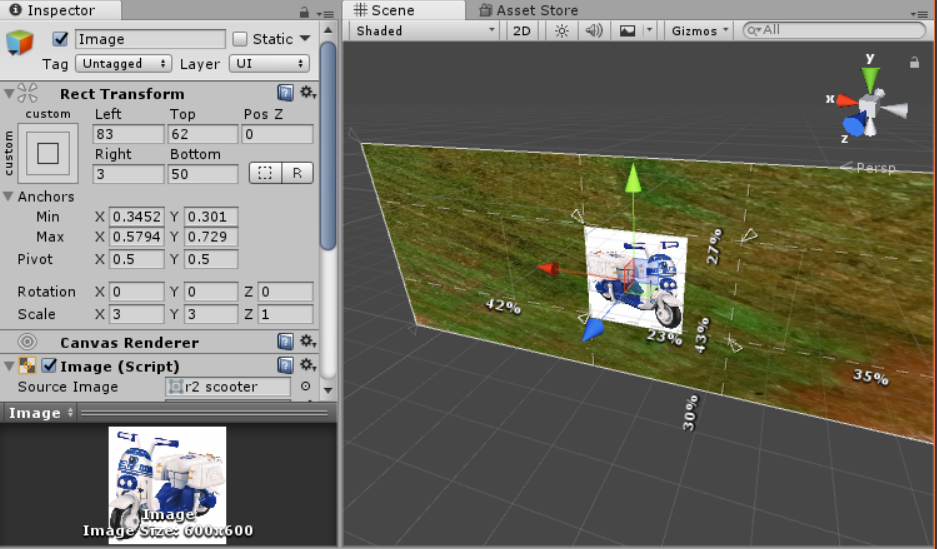

Canvas Elements in Unity
Right click - UI - Canvas
Canvas is always overlayed over the camera no matter where it is in the scene (default render mode)
- Screen Space - camera: requires one to link the render camera
- camera size - canvas is part of the world space
- world space - canvas is another object in the world (i.e. VR in which canvas should be in the scene)
2d view mode makes it easier to view and edit
Adding an image:
- Add an image to the canvas
- Import an image
- Click on image and change Texture Type to Sprite (2d and GUI)
- Resize to fit proportions while holding shift
Background image and scalability:
- New image: Add, import, set to sprite
- Set rect transform left, top, right, and bottom to 0
- Make gridding equal stretch and stretch on both axes
- Physically drag the anchor points to the corners
- Under image, press Set Native Size
- May like to preserve aspect ratio check box as well
